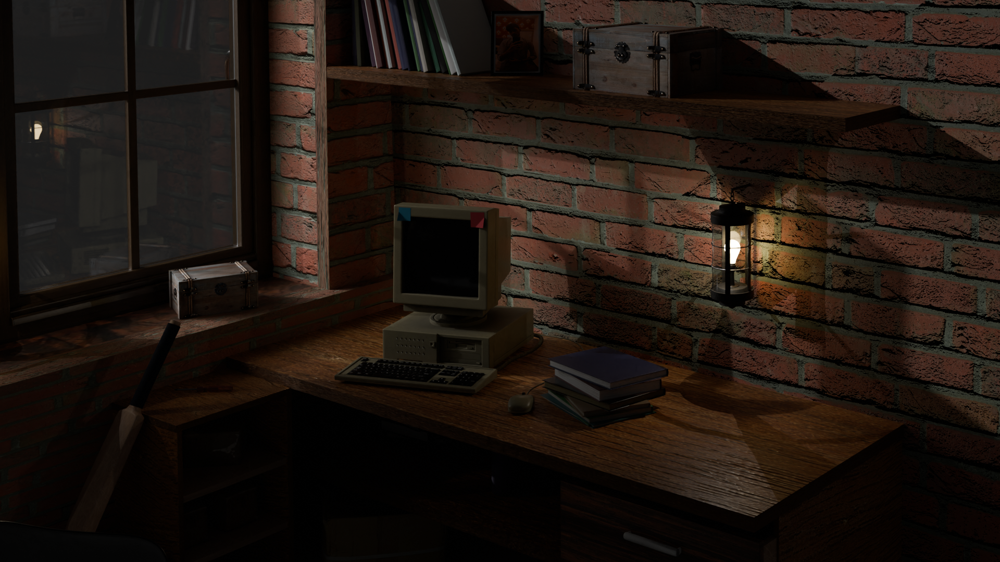

Vintage Desk Setup
3D Modeling • 2024

Project Overview
This project is a fully hand-crafted 3D environment created to capture the warm, nostalgic atmosphere of a late-night workspace. The scene features a retro computer setup, wooden furniture, brick walls, and subtle lighting elements that together create a realistic and story-driven visual. My focus was on achieving believable materials, cinematic lighting, and a lived-in environment that feels grounded and immersive.
My Contributions
- Designed and modeled a complete desk corner setup including the vintage computer, books, shelves, wooden table, window frame, and props.
- Built a detailed brick-wall interior with realistic imperfections and material variations.
- Arranged objects to create a natural, storytelling composition that reflects a cozy, old-school workspace.
Environment Design
- Created a moody, low-light environment using a single lamp source to highlight key objects.
- Used soft shadows and controlled light falloff to enhance realism and depth.
- Balanced warm and cool tones to emphasize the nostalgic ambiance of the scene.
- Integrated reflections and subtle bounce lighting to enhance the realism inside the room.
Lighting & Atmosphere
- Modeled all objects with clean topology and optimized geometry.
- Used procedural and image-based texturing to achieve natural wood, brick, and metal surfaces.
- Configured render settings (Cycles) for noise-free, high-quality output with realistic global illumination.
Technical Work
Tools & Technologies
- Blender 3D (Modeling, UV Unwrapping, Shading, Lighting, Rendering)
- Cycles Renderer (high-quality global illumination)
- HDRI Lighting (for soft ambient bounce)